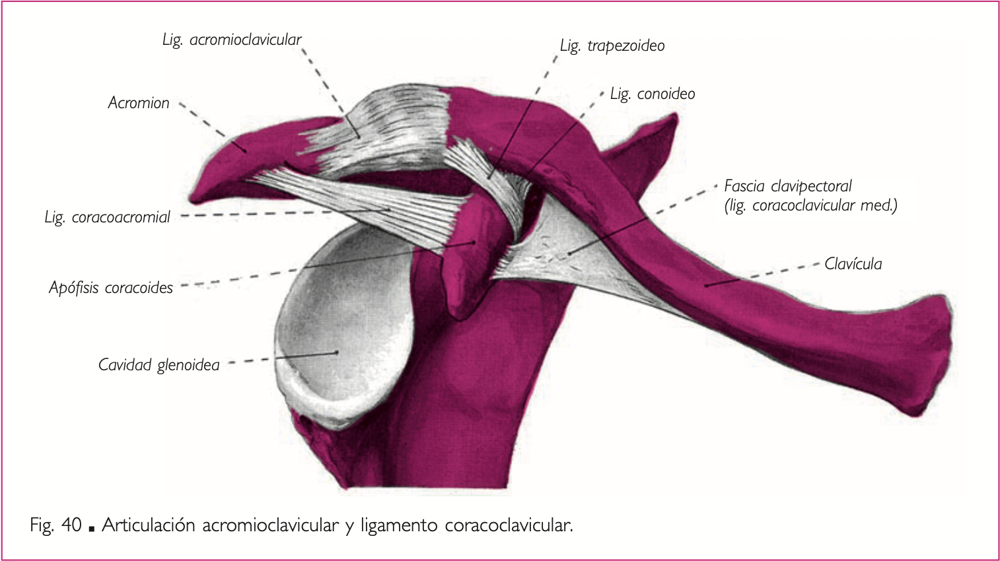
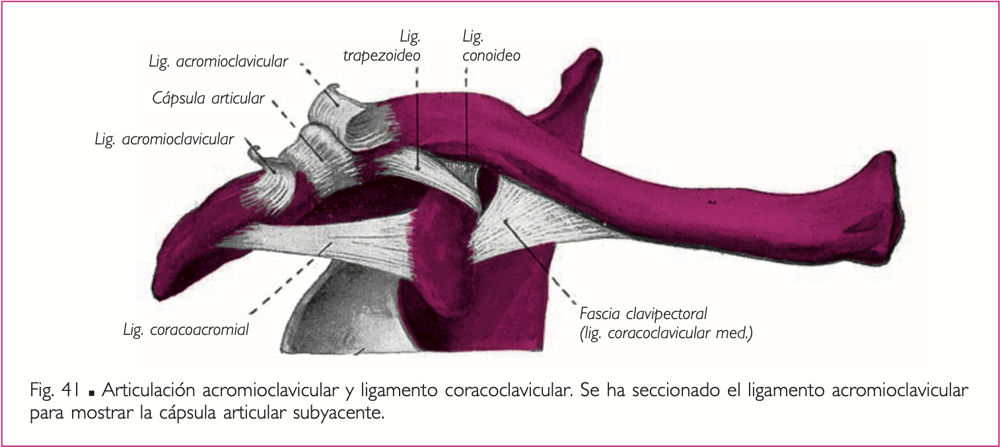
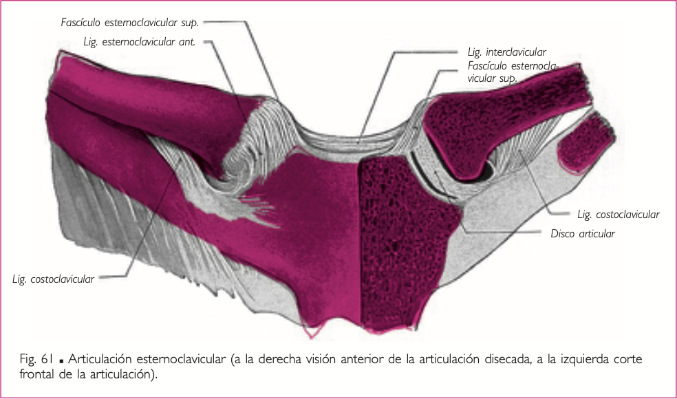
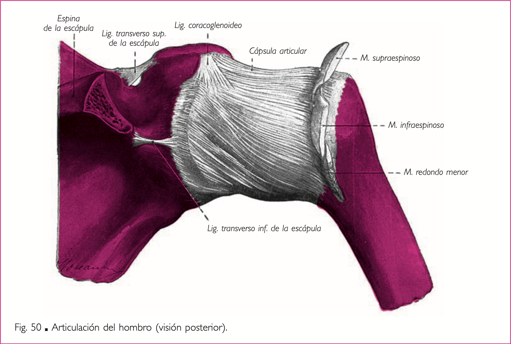
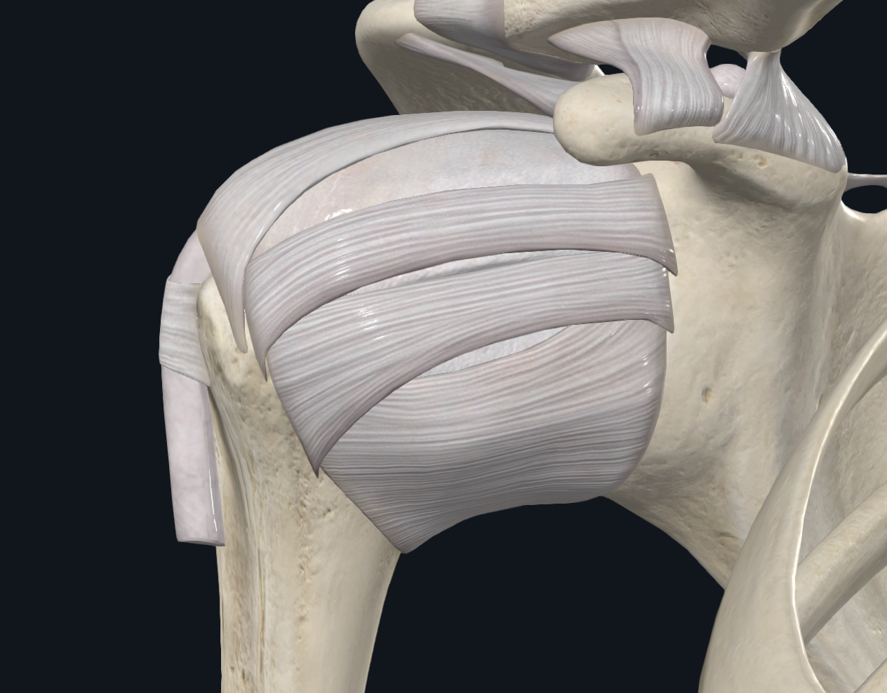
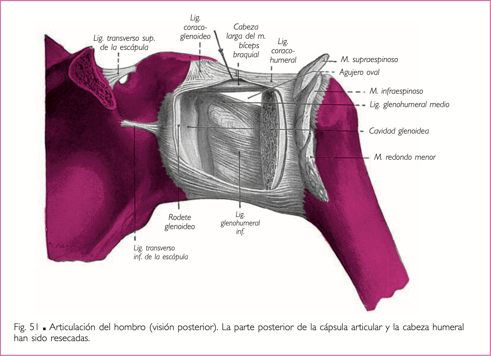
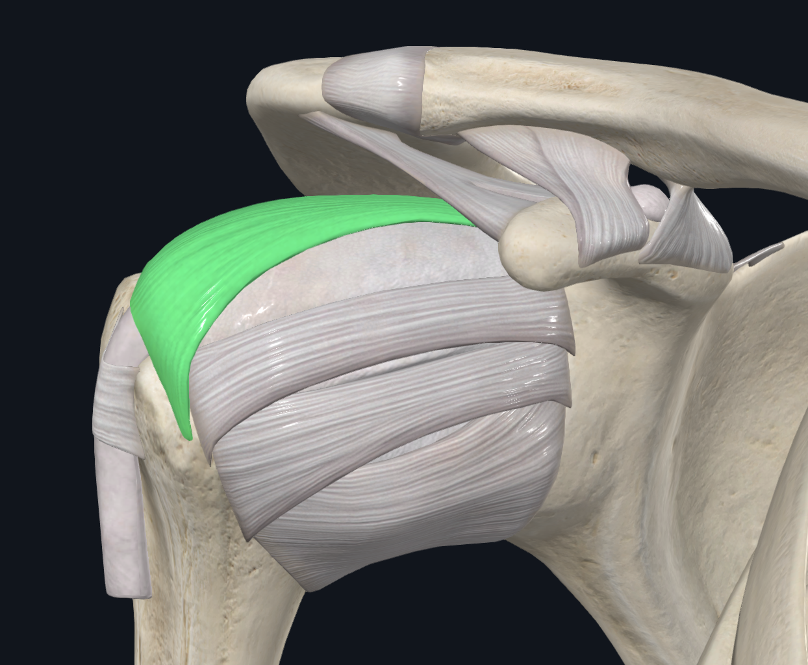
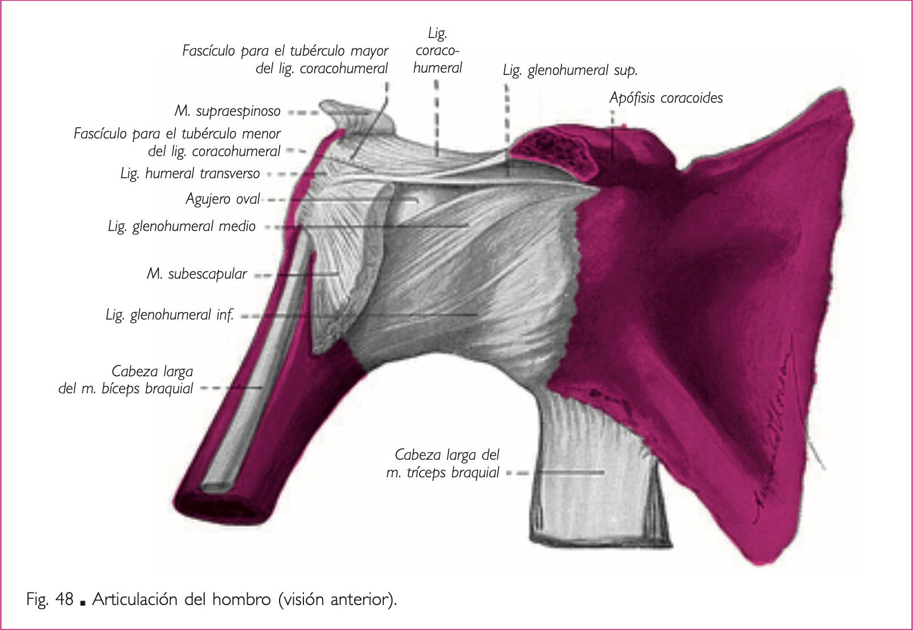
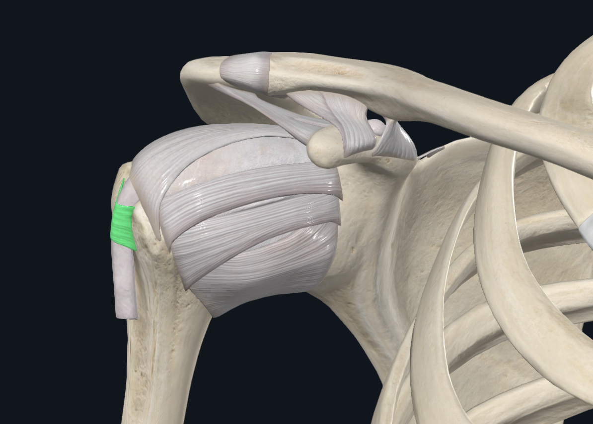

Miembro superior / Artrología
Articulación Cintura Escapular
Complejo articular del hombro, medios de unión y movimientos.
Articulación Cintura Escapular
Articulación Acromioclavicular
- Presenta Movimiento
- Superficies articulares Planas - Diartrosis Artrodia
- Acromion de la escápula
- Epífisis externa de la clavícula
- Medios de Unión
- Cápsula Articular
- Ligamento acromioclavicular
Imagen
Referencia visualImagen 01

Referencia visualImagen 02

{kind=link}
{kind=link}
Articulación Coracoclavicular
- No presenta movimiento - Sinartrosis Sindesmosis
- Apófisis Coracoides
- Epífisis Externa de la Clavícula
- Medios de Unión
- Ligamento Coracoclavicular:
- Fascículo Conoide (mas interno)
- Fascículo Trapezoide (mas externo)
- Ligamento Coracoclavicular:
Articulación Esternoclavicular
- Presenta Movimiento
- Superficies articulares en silla de montar → Encaje Recíproco
- Extremidad interna de la clavícula
- Carilla articular del manubrio esternal
- Medios de Coaptación: Discos Interarticulares.
- Medios de Unión
- Cápsula Articular
- Ligamentos Esternoclavicular - Anterior y Posterior
- Ligamento Interclavicular - De una clavícula a la otra. Pasa por la O. Esternal.
- Ligamento Costoclavicular - Epífisis Interna de la Clavícula a la 1er Costilla.
Imagen
Referencia visualImagen 03
{kind=link}

Articulación del Hombro
Articulación Glenohumeral - Escapulohumeral
- Presenta Movimiento
- Superficies Articulares con forma de Esfera - Diartrosis Enartrosis
- Medio de Coaptación: Rodete Glenoideo.
- Caviadad Glenoidea de la Escápula
- Cabeza Humeral
- Medios de Unión
- Cápsula Articular
Imagen
Referencia visualImagen 04

- Ligamento Glenohumeral
- Tres fascículos: superior, medio e inferior. Nacen de la cavidad glenoidea, el superior se dirige a la cara superior del troquin o tubérculo menor, el medio se extiende desde la cavidad glenoidea hacia el troquin, mientras que el inferior desde la C. Glenoidea y a la base del troquin.
- Estos 3 fascículos delimitan el Forámen Oval de Rouviere se encuentra entre el fascículo inferior y medio. Mientras que el segundo Forámen Oval de Weitbrencht entre el fascículo medio y superior. Pasa el tendón del Musculo Subescapular.
Imagen
Referencia visualImagen 05

Referencia visualImagen 06

- Tres fascículos: superior, medio e inferior. Nacen de la cavidad glenoidea, el superior se dirige a la cara superior del troquin o tubérculo menor, el medio se extiende desde la cavidad glenoidea hacia el troquin, mientras que el inferior desde la C. Glenoidea y a la base del troquin.
- Ligamento Coracohumeral
- Se extiende desde la A. Coracoides se bifurca en dos fascículos, uno se inserta en el troquin y el otro en el troquiter.
Imagen
Referencia visualImagen 07

Referencia visualImagen 08

- Ligamento Humeral Tranverso
- Se extiende del Troquin al Troquiter
Imagen
Referencia visualImagen 09

Referencia visualImagen 10

- Manguito Rotador
- Conjunto de cuatro músculos que van a reforzar la articulación desde posterior. Músculos Subescapular, Supraespinoso, Infraespinoso y Redondo Menor.
{kind=link}
{kind=link}
{kind=link}
{kind=link}
{kind=link}
{kind=link}